割れちゃったiPhoneの液晶を直したお話
Tweet
概要
割れた iPhone 6 Plus
他のことに夢中になっているときに机から落として割ってしまいました．ショックです…
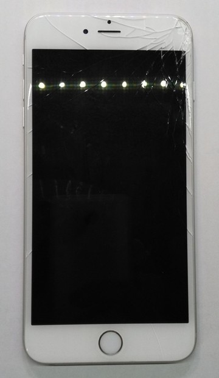
自力で液晶パネルを交換する
割れた液晶を使用して手を怪我したり，Appleに高いお金を支払って修理するのは嫌なので，ここは技術者として自力で交換してみたいと思います．
Amazonで必要なものを注文
フロントパネル
iPhone 6 Plusなので1枚\12,880でした．iPhone5sやiPhone6ならもっと安いです． 純正品ではありませんが，とてもきれいです．
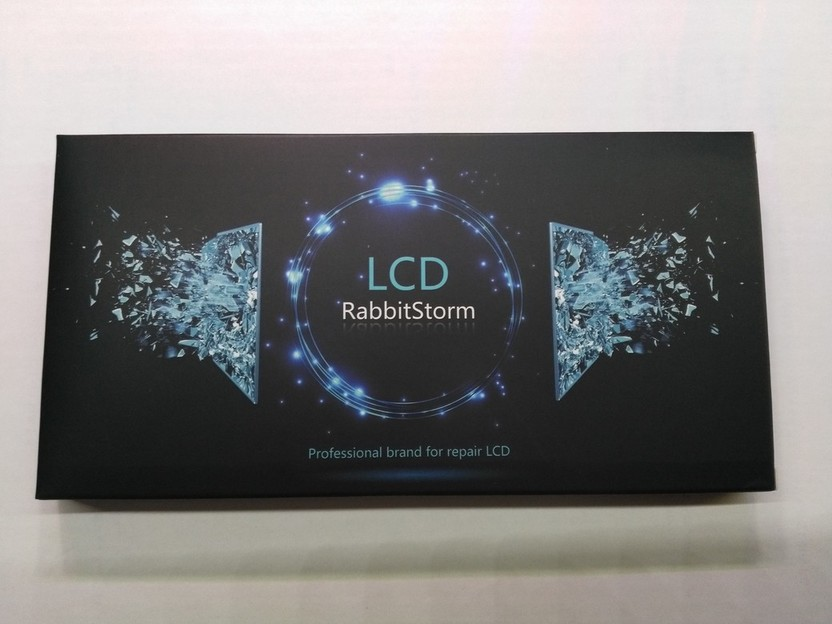
届いた液晶には保護フィルムが貼ってありました．
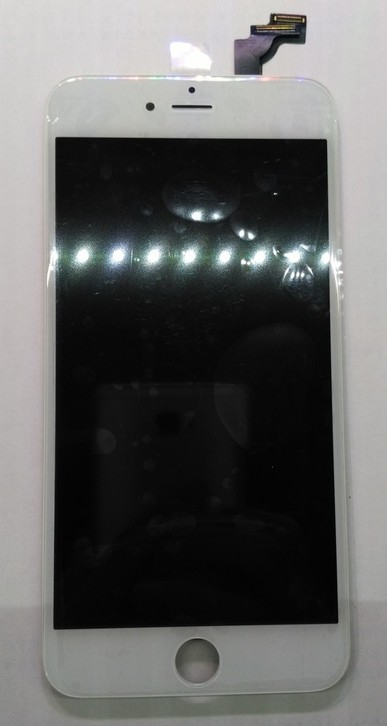
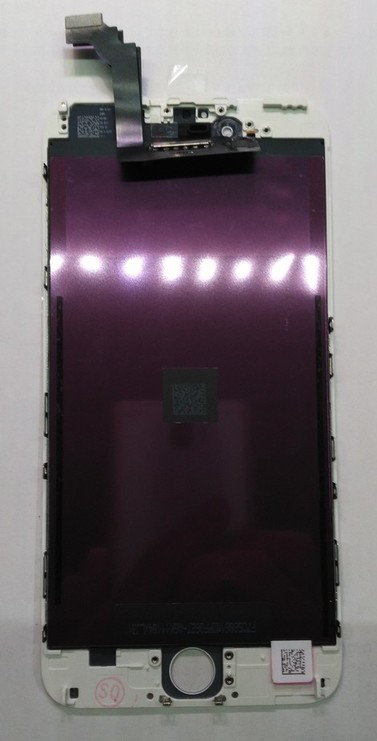
道具
これもAmazonで300円ほどで購入できます．今回，液晶パネルに道具がついてきました．※ピンセットは自前です．
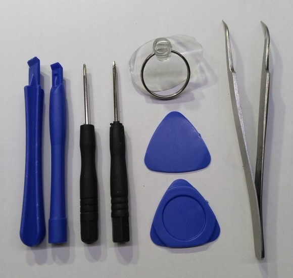
分解過程
分解開始
iPhoneの下側にある星形ネジを外し，吸盤で画面を引っ張りながら分解していきます．
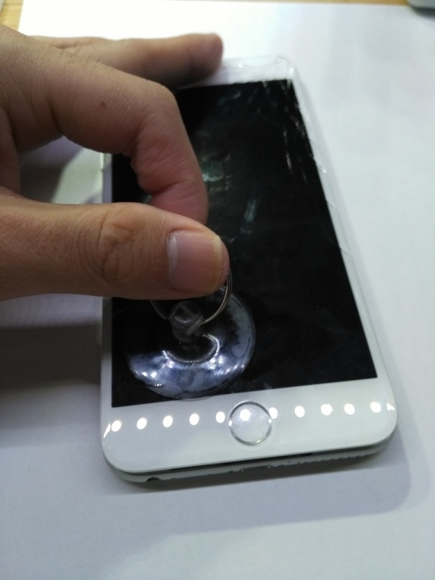
ちょっと隙間ができたら工具を差し込む．
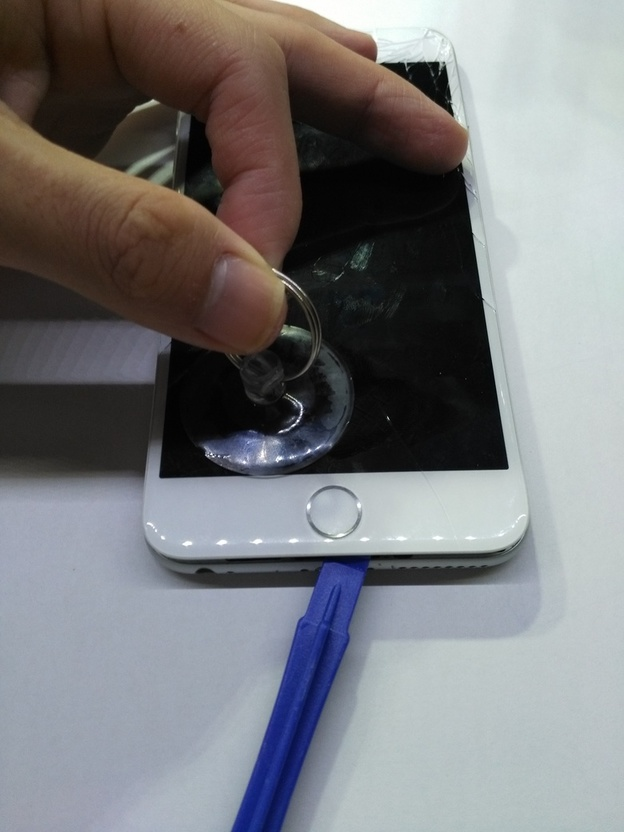
配線が切れないように慎重に開ける．
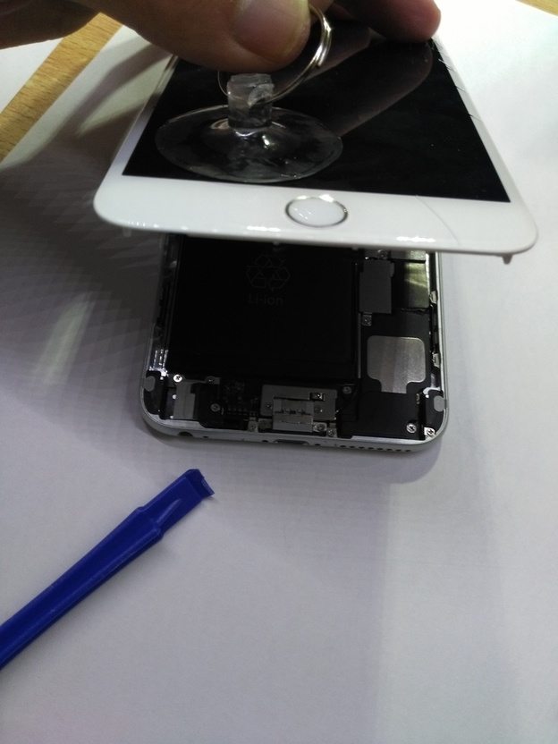 開きました．
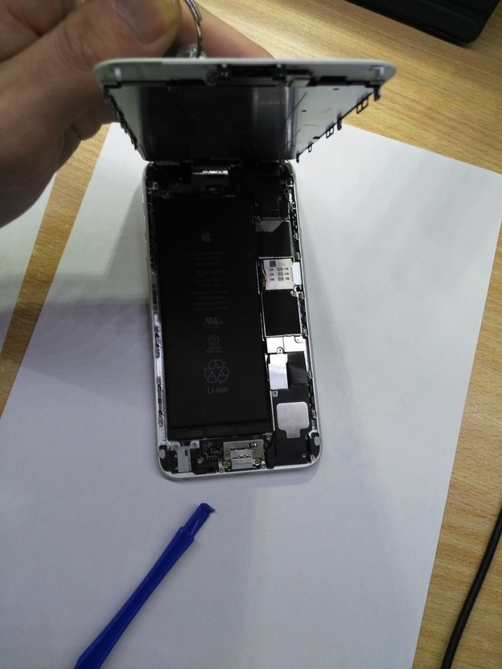
コネクタを外す
接続はすべてコネクタになっているので外すのは簡単です．
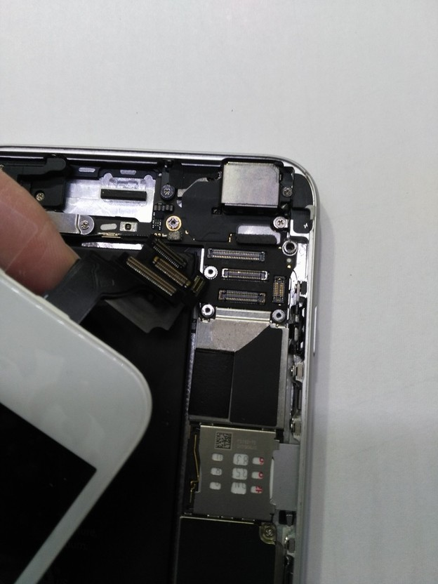
液晶が外れました
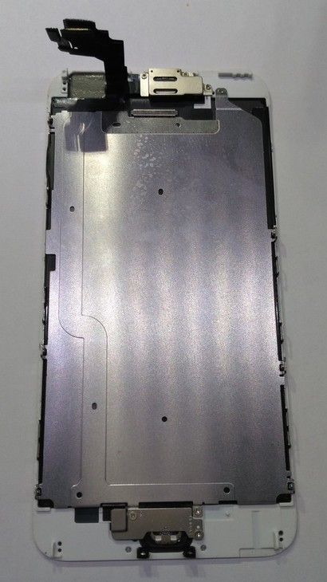
大きな電池が載ってます．
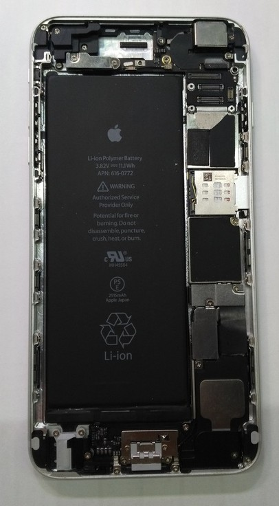
画面，割れてます．
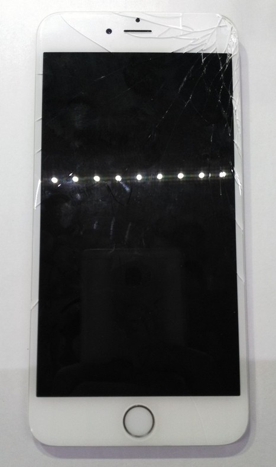
液晶パネルから種々の部品を外す
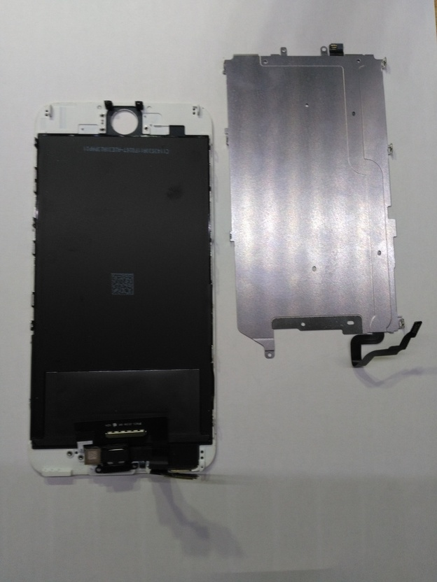
ネジがわからなくならないようにちゃんと書いておきましょう．
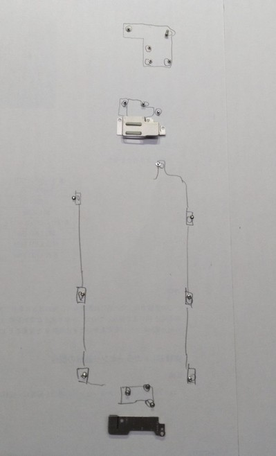
インカメなどを外します．
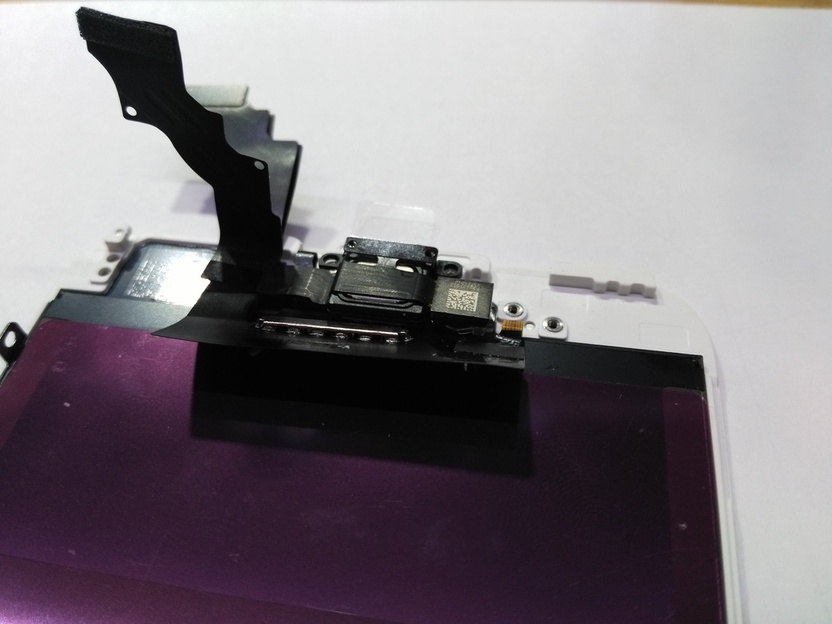
ホームボタンです．
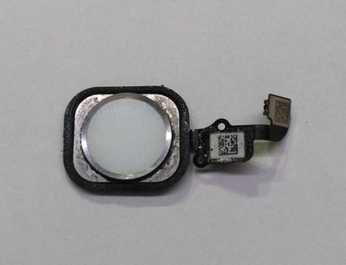
新しい液晶パネルに外した部品を移植
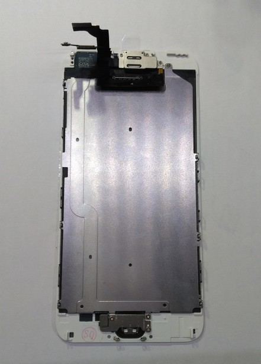
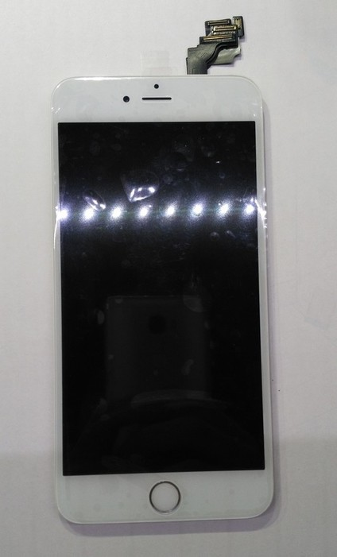
新しい液晶をiPhone本体に取り付ける
あとは取り外したときと逆の手順で取り付けるだけです．
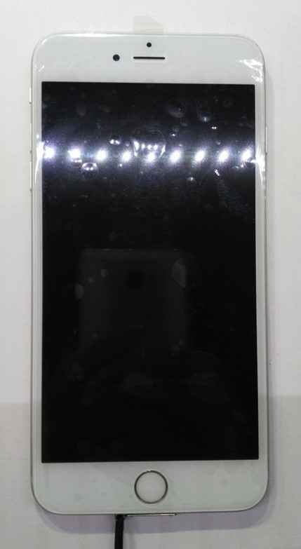
作業時間は15分ほどでした．
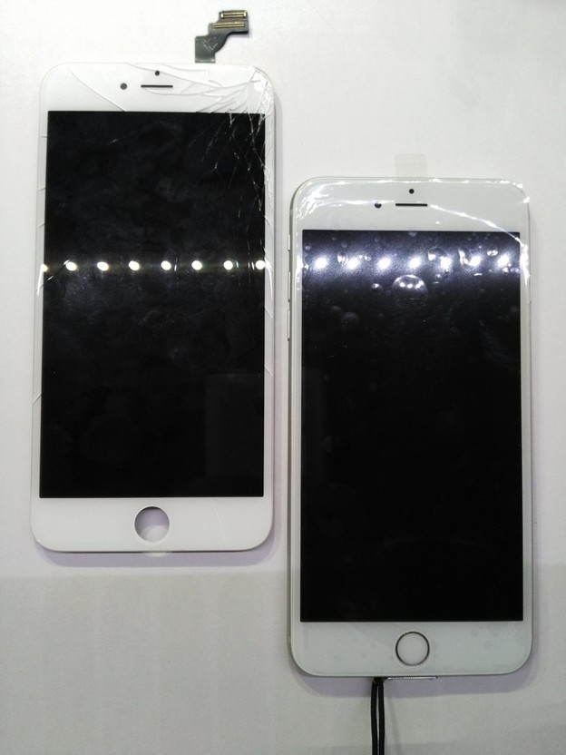
完成！
完全復活しました！ 13,000円ほどかかり，決して安くないですがAppleの修理よりは安いと思います． 一番大切なことはiPhoneは落とさないことです．以後気を付けましょう．
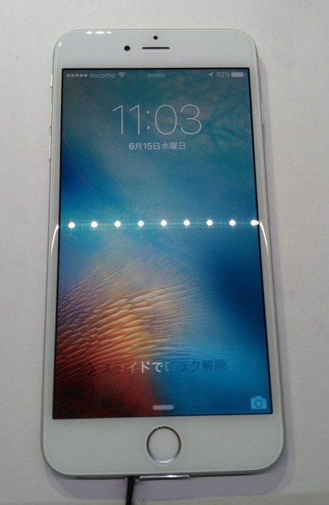
次の記事
赤外線学習リモコンの基板が届きました！
前の記事